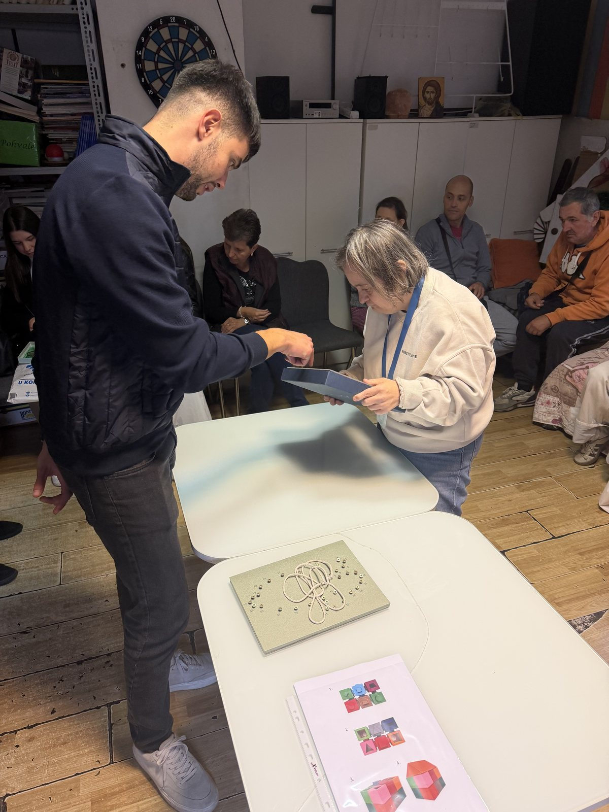
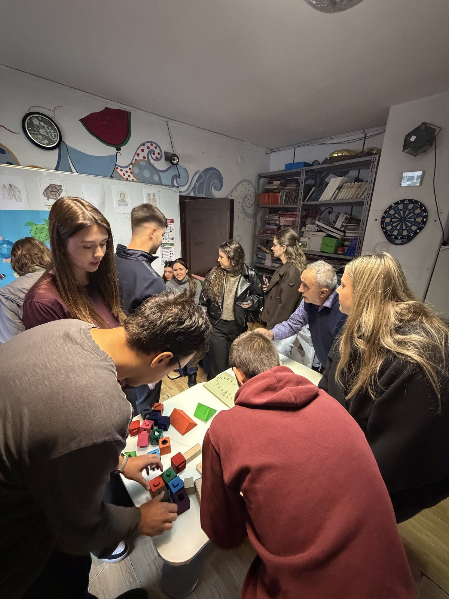
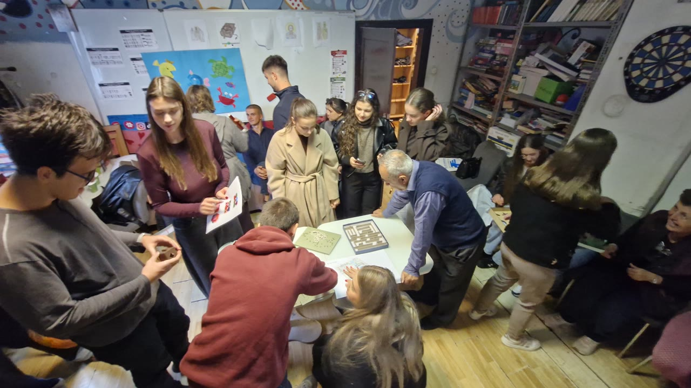
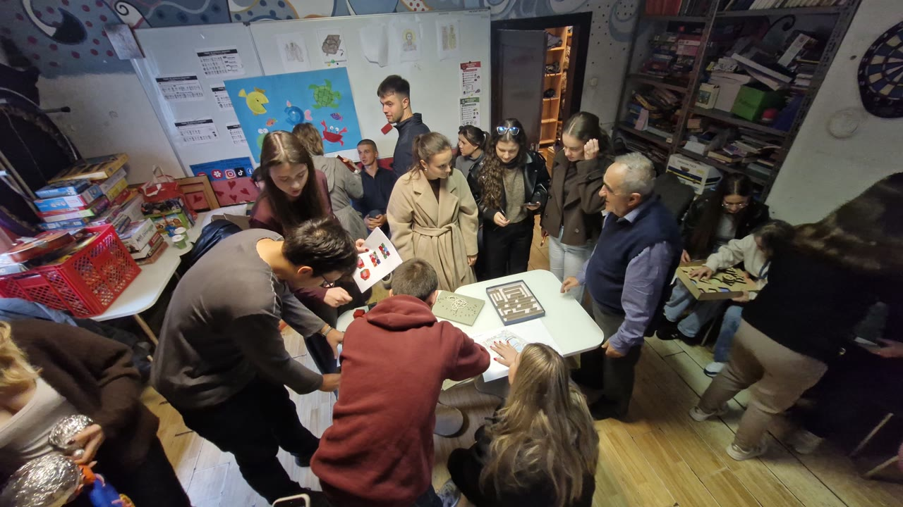
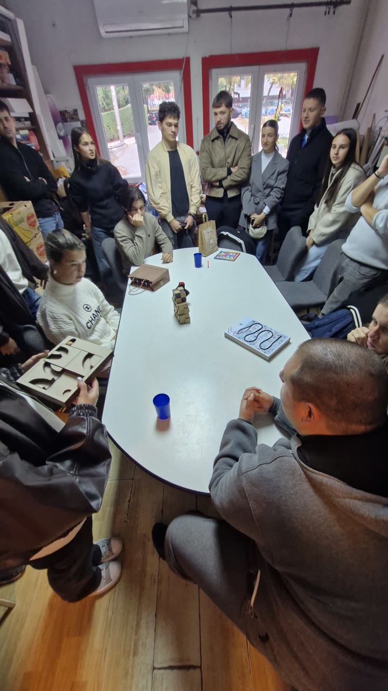

Radovi i primeri / Čas 5
edukativna
Katarina Ušjak86/24
Čas 5
3 prikaza rada · Gradivo časa


U rukama korisnika · 30.10.2026.
5 kadrova sa posete udruženju · cela poseta ↗
Dva dela istog rada traže zajedničko ležište pri predaji iz ruke u ruku
ViđenoU prvom kadru posete siva tabla sa belim kanapom uvijenim u petlje leži na stolu dok se plitka metalna kutija sa penastim oblicima predaje stojeći iz ruke u ruku; u narednim kadrovima oba dela stoje na ivici prednjeg stola kao dva odvojena predmeta.
Sledeća probaPovezati tablu sa kanapom i plitku kutiju sa oblicima u jedinstvenu podlogu ili preklopnu kutiju kako se pri probi u stojećem položaju i prenošenju delovi ne bi razdvajali.










Ista ruka, ostale nedelje
- edukativna Prototip igračkenedelja 6 · 2 slike
- Bez naziva Reciklaža tekstilanedelja 6 · 2 slike
- edukativna nedelja 4 · 2 slike
- edukativna nedelja 3 · 2 slike